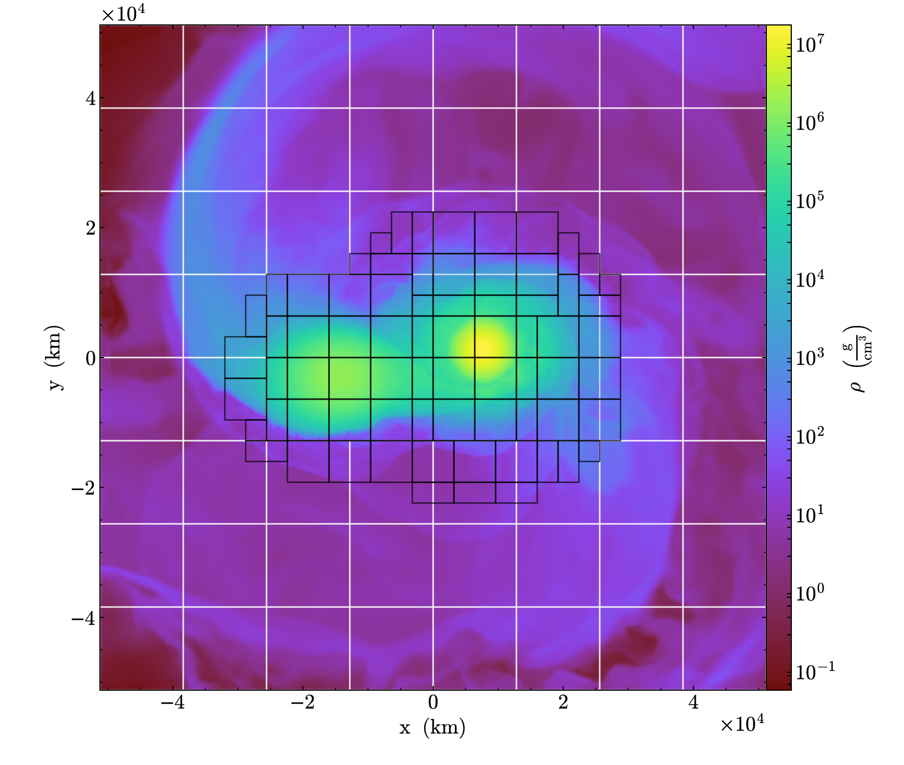
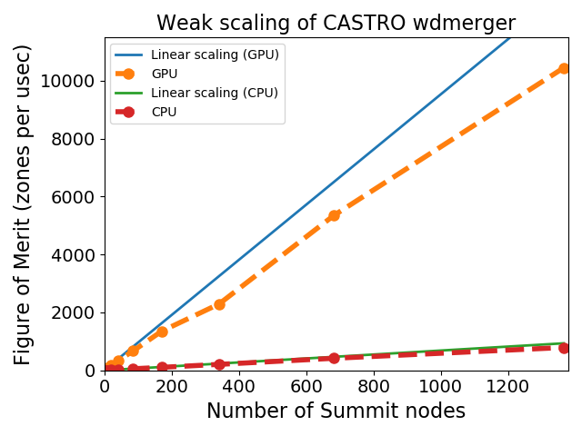

AMReX-Astrophysics
Castro: compressible flows
Our group develops the Castro compressible (magneto-, radiation) hydrodynamics code. Castro supports a general equation of state, arbitrary nuclear reaction network, full self gravity w/ isolated boundary conditions, thermal diffusion, flux-limited diffusion (multigroup) radiation, rotation, and more.
Castro runs on anything from laptops to supercomputers, using MPI+OpenMP for CPUs and MPI+CUDA for GPUs.

We use Castro for our white dwarf merger and X-ray burst simulations.
MAESTROeX: low Mach number stellar flows
We also develop (together with LBNL)
the MAESTROeX
low Mach number stellar hydrodynamics code. MAESTROeX
filters soundwaves from the equations of hydrodynamics
while keeping compressibility effects due to
stratification and local heat release. This enables
it to take large timesteps, not constrained by the
soundspeed, for subsonic flows.
Reactive flows
blah
blah
